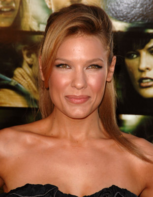
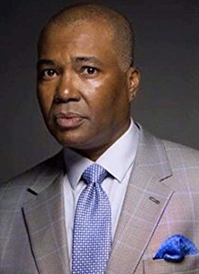

#8541 Benji

 IMDB-Wertung: 6.4 / 10
IMDB-Wertung: 6.4 / 10  Tomatometer: 60
Tomatometer: 60  Metascore: 53
Metascore: 53 
Als der junge Carter (Gabriel Bateman) eines Tages durch Zufall auf einen streunenden Hund trifft, ist es Liebe auf den ersten Blick. Prompt wird der Vierbeiner nach Hause geschmuggelt, wo er auch das Herz von Carters Schwester Frankie (Darby Camp) im Sturm erobert – sehr zum Leidwesen ihrer Mutter Whitney (Kiele Sanchez). Und da die Kinder ihren neuen Freund Benji getauft haben, ist er jetzt auch Teil der Familie! Ihr felliger Freund kann aber noch viel mehr als nur süß zu sein. Denn eines Tages werden Carter und Frankie von fiesen Typen entführt. Zeit für Benji zu zeigen, was er wirklich drauf hat. Entschlossen und mutig begibt er sich so auf eine gewagte Rettungsmission, um seine Liebsten aus den Fängen der Bösen zu befreien. Und die haben garantiert nicht damit gerechnet, dass ausgerechnet ein Hund ihnen einen Strich durch die Rechnung machen könnte. Wuff!
Jahr: 2018
Dauer: 87 Minuten
FSK:
Land: USA Studio: NetflixTonspuren: DD5.1 - , DD5.1 - ,
Untertitel: Deutsch, Englisch, Französisch, , , ,
Auflösung: 1080p (1920x1080) Größe: 4771 MB
Genre: Drama, Krimi, Familie
Regisseur: Brandon Camp
Drehbuch: Joe Camp
Soundtrack: Kostas Christides
Darsteller:
 Gabriel Bateman als Carter
Gabriel Bateman als Carter- Darby Camp als Frankie
-  Kiele Sanchez als Whitney
-  Gralen Bryant Banks als Sam King
- Will Rothhaar als Syd
 Angus Sampson als Titus
Angus Sampson als Titus- Jerod Haynes als Lyle
- Lacy Camp als Officer
- Jim Gleason als Captain Newsome
- Brady Permenter als Brute
- Tom Proctor als Cajun Captain
- Jon Arthur als New Orleans Police Officer (uncredited)
- James W. Evermore als Vendor
- Arthur J. Robinson als Mr. Okra
- Kirk H. Andersen als Pedestrian (uncredited)
- Chris Angerdina als Pedestrian (uncredited)
- Anthony Barbier als Himself (uncredited)
- Brandon Fontenot als Father (uncredited)
- John Garcia als Ice Cream Vendor (uncredited)
- Victoria Hardway als Crime Scene Pedestrian (uncredited)
- Shane Jackson als Pedestrian (uncredited)
- Shannon J. Jackson als Pedestrian (uncredited)
- Ron M Patterson als Cook (uncredited)
- Micheal Robinson als Pedestrian (uncredited)
- Darrell L. Shuler als Thief (uncredited)
- Sean Stevens als Driver / Pedestrian (uncredited)
Datei: X:\2018(A-F)\Benji (2018, FSK, 1920x1080).mkv seit 22.03.2018
Festplatte: HD 2017(A-Z)-2018(A-F)
 Es gibt insgesamt 151 Filme in der Gruppe '2018(A-F)'
Es gibt insgesamt 151 Filme in der Gruppe '2018(A-F)'